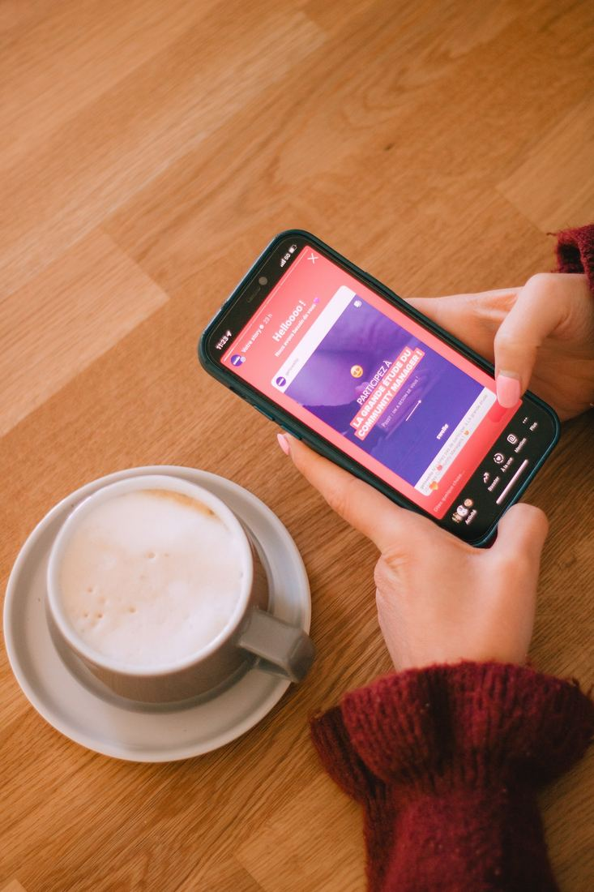
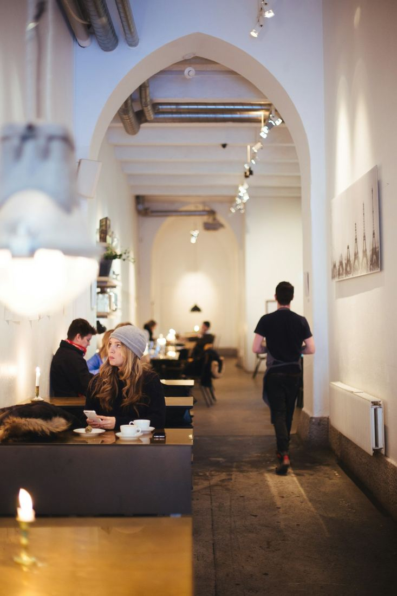

Atendimento e relacionamento
- Chatbots inteligentes
- Respostas inteligentes
- Triagem de atendimento


Automatizamos o atendimento, as vendas e a gestão de pequenas empresas de Paulínia e região.
Desenvolvemos soluções com Inteligência Artificial para automatizar processos, otimizar operações, melhorar o atendimento e aumentar a produtividade da sua empresa.



Toque no seu ramo e veja o que a Kyzent faz no seu dia a dia.
Conte como é o seu dia a dia. A gente responde no WhatsApp e monta um orçamento personalizado.